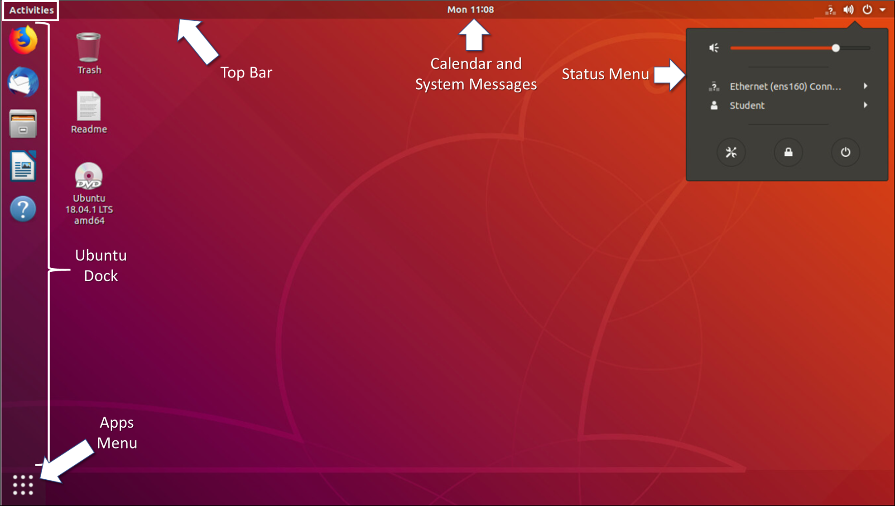

4.6.1 Sistema de ventanas X
La interfaz gráfica presente en la mayoría de las computadoras Linux tiene como base el sistema X Window. También conocido como X o X11, X Window es un sistema de ventanas diseñado para proporcionar el marco de trabajo básico para una GUI. X incluye funciones para dibujar y mover ventanas en el dispositivo de visualización, e interactuar con un mouse y un teclado.
X funciona como un servidor, el cual le permite a un usuario remoto utilizar la red para conectarse, iniciar una aplicación gráfica y mantener la ventana de gráficos abierta en el terminal remoto. Mientras la aplicación propiamente dicha se ejecuta en el servidor, la apariencia gráfica se envía por X a través de la red y se ve en la computadora remota.
Tenga en cuenta que X no especifica la interfaz de usuario y deja que otros programas, como los gestores de ventanas, definan todos los componentes gráficos. Esta abstracción otorga gran flexibilidad y personalización, ya que es la aplicación del usuario la que define los componentes gráficos, como botones, fuentes, iconos, bordes de ventanas y esquemas de color. Debido a esta separación, la GUI de Linux varía enormemente de una distribución a otra. Ejemplos de gestores de ventanas son Gnome y KDE. Mientras que el aspecto de los gestores de ventanas varía, los componentes principales permanecen presentes.
La figura muestra Administrador de ventanas de Gnome.

Esta figura muestra el Administrador de ventanas de KDE.

4.6.2 La GUI de Linux
Aunque un sistema operativo no necesita una GUI para funcionar, las GUI se consideran más fáciles de usar que la CLI. El usuario puede reemplazar fácilmente la GUI de Linux en su totalidad. Como resultado de la gran cantidad de distribuciones de Linux, en este capítulo, nos centraremos en Ubuntu al hablar de Linux, ya que es una distribución muy popular y fácil de usar.
Ubuntu Linux utiliza Gnome 3 como la GUI predeterminada. El objetivo de Gnome 3 es hacer que Ubuntu sea todavía más fácil de usar. La tabla muestra los principales componentes de la interfaz de usuario de Unity.
La figura muestra la ubicación de algunas de las características del escritorio Ubuntu Gnome 3.

| Componente UI | Descripción |
|---|---|
| Menú de Apps |
|
| Ubuntu Dock |
|
| Barra Superior |
|
| Calendario y Bandeja de Mensajes del Sistema |
|
| Actividades |
|
| Menú de Estado |
|